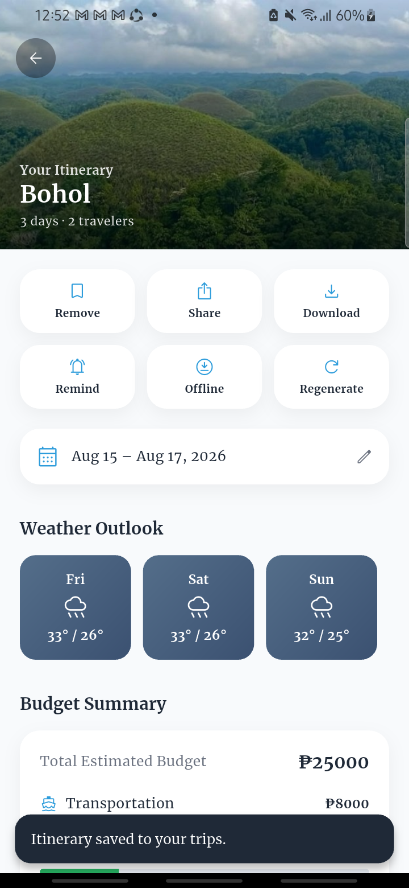
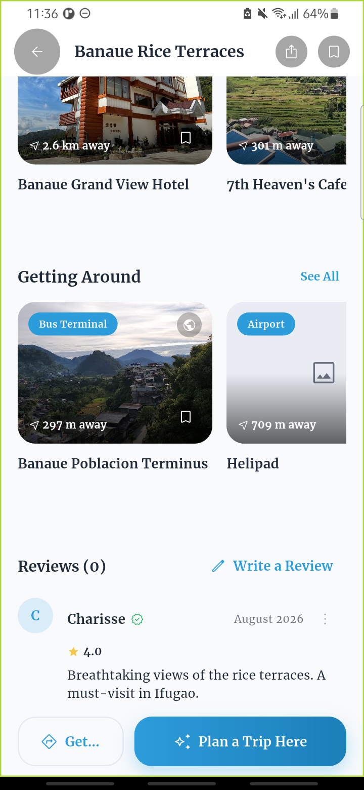

| Project Name: | TripNest PH |
| Main Data Entity: | Saved Trip Itineraries |
| Submitted by: | Villarama, Charisse |
| Course/Section: | ITE233 |
| Date: | August 2026 |
TripNest PH is a Flutter and Firebase travel-planning app for the Philippines. Its AI Trip Planner generates a full day-by-day itinerary — budget breakdown, weather outlook, and recommended stays — for a destination the traveler chooses. This activity implements complete CRUD (Create, Read, Update, Delete) functionality on the main data entity managed from that flow: Saved Trip Itineraries. Travelers can save a generated itinerary, view every trip they've saved, update a trip's travel start date, and remove a trip they no longer need.
Database: Firebase Cloud Firestore
Firebase Firestore stores each saved itinerary as a document in the
saved_itineraries collection. The app communicates with
Firestore through a single repository class
(ItineraryRepository) to create, read, update, and delete these
records, and listens to the collection live so the "My Trips" list updates
immediately after any change — no manual refresh needed.
Saving a freshly AI-generated itinerary by tapping a bookmark icon, optionally tagging it with a real travel start date. Writes the whole itinerary as a new Firestore document.

Retrieves every trip the signed-in traveler has saved from Firestore and displays it under "My Trips," live, with no manual refresh needed.

Lets the trip's owner change its travel start date through a date picker and save the change back to Firestore. Weather Outlook re-fetches for the new date.
Lets the owner remove a saved trip. A confirmation dialog naming the trip is shown first, so it can't be deleted by accident.
Validation is enforced at two levels. On the client, a save/update/delete action is only allowed while the traveler is signed in — an unauthenticated attempt shows the message "Sign in to save this itinerary." instead of writing anything. On the server, Firebase Firestore Security Rules independently re-check every write against the same ownership rule, so the restriction cannot be bypassed even by a modified client — a saved itinerary can only be created, updated, or deleted by the traveler who owns it.
saved_itineraries.| Operation | Function |
|---|---|
| Create | Saves a newly generated itinerary as a new document in Firebase Firestore |
| Read | Retrieves and displays every trip the traveler has saved, live |
| Update | Modifies an existing trip's travel start date |
| Delete | Removes an existing saved trip, after confirmation |
| Validation | Client-side sign-in check plus server-side Firestore Security Rules restrict every write to the trip's owner |
The project successfully implements complete CRUD functionality on Saved Trip Itineraries using Firebase Firestore. Travelers can create, view, update, and delete their saved trips, while client- and server-side validation ensures only the trip's owner can modify or remove it. The implemented features provide a functional and user-friendly way of managing a traveler's saved trips within TripNest PH.